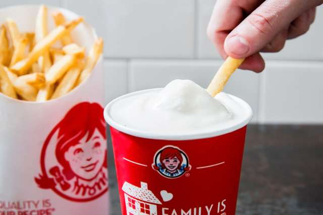
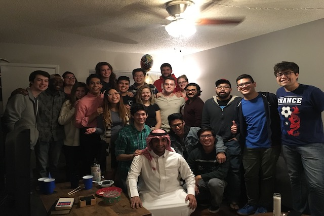

My name is yazeed and my american friends call me YAZEEDLE because they found it so hard to pronounce the litter d in the end of my name. However, yes, I decided to come to U.S. to do graduate school but first I had to learn English and then I learned the culture. The most important thing is making good friends. Let’s see what this journey has done to me so far.
I came to U.S. directly to the new homeland to me Austin TEXAS and as it says "You may all go to hell, and I will go to Texas". - Davy Crockett. So, I had learned English at UT for a year and 7 months. It was a good journey and made good and bad moments when I misunderstood people because the English language. However, I am still consider myself not fluent in english but at least good enough to go to school in Chicago.
">Let’s say the only culture that I really love is food so I had an amazing tex mix food in Texas and I had an awesome BBQ food there besides good texsan steak. One thing to be mentioned is that dipping the french fries in a sweat milk shake which is called sweat and salty. I thought it was going to be disgusting but it was not. In fact, I love to dip the fries in sweat shakes right now.
">Making american friends made me learning so much culture stuff to understand their jokes and their way. However, sports and movies were the way to make friends. I watched a tv show called friends and since then I got those guys. Of course, they also had a huge part of me learning the language so I do not want to forget mentioning that too.
">